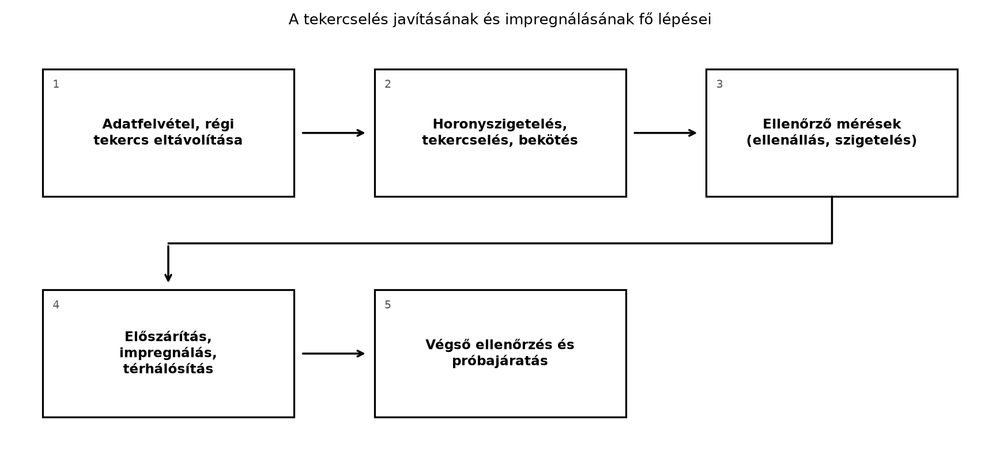

A villamos gép kívülről gyakran csak egy csendes vagy éppen zúgó doboz, belül azonban precíz anyagrendszer dolgozik: tekercselt réz vagy alumínium vezetők, szigetelőanyagok, vaslemezek, csapágyak és – egyes gépeknél – szénkefék. Ha a motort megbontod, nem elég „látni”, hogy van benne valami réz és vas: tudnod kell, milyen egy egészséges tekercsfej, mire való az impregnálás, miért szikrázik a szénkefe, és miből hallod meg a csapágyhibát. Ez az alfejezet ezt a gépszerkezeti és anyagvizsgálati tudást adja.
A(z) Vaslemezek, tekercsvezetők és szigetelési osztályok alfejezetben megismerkedtél a vaslemezekkel, tekercsvezetőkkel és szigetelési osztályokkal. Most arra a kérdésre válaszolunk, ami a műhelyben felmerül: mi van az állórész hornyaiban, hogyan készül és miért van impregnálva a tekercselés, mi a kalickás forgórész, mit vizsgáljunk a csapágyon és a szénkefén?
Képzelj el egy háromfázisú aszinkron motort, amelyet éppen megbontottak. Az állórész belső palástján hornyok futnak. A hornyokban szigetelt tekercsoldalak fekszenek, a horonyon kívül a kétoldali tekercsfej domborodik, amelyet üvegszálas kötözőzsineggel és impregnáló lakkal rögzítettek. A forgórész tengelyére préselt vaslemezcsomagban kalickás rudak húzódnak, a tengely két végét gördülőcsapágyak tartják. Ha csúszógyűrűs gépről van szó, a forgórész végén gyűrűkön futó szénkeféket is látsz.

Az ábrán a tekercselés javításának és impregnálásának jellemző folyamata látható. A konkrét sorrendet mindig a gép gyártói dokumentációja, a tekercselőműhely technológiája és a szigetelési rendszer minősítése szabja meg.
Definíció. Az állórész-tekercselés a forgó villamos gép álló részében elhelyezett, egymástól és a vaslemeztől szigetelt vezetőrendszer, amelyben a forgó mágneses mezőt létrehozó áram folyik.
A háromfázisú tekercselés fázistekercsekből áll, amelyeket a hornyokban úgy osztanak el, hogy a rákapcsolt szimmetrikus feszültségrendszer hatására pólusszámtól függő, forgó mező alakuljon ki. A horonyban lévő tekercsoldalakat horonyszigetelés választja el a vaslemeztől; a horony száját záróék vagy szigetelőcsík rögzíti.
Definíció. A tekercsfej a tekercs azon része, amely a hornyon kívül köti össze a tekercsoldalakat, és a horonyvégeknél ívesen hajlik.
A tekercsfej nem „felesleges hossz”, hanem a tekercs része. A tekercsfejet kötözőzsinórral, szalaggal és impregnáló lakkal rögzítik, mert az indítási áram nagy erőhatásokat kelt. Ha a tekercsfej nincs elég szilárdan rögzítve, a rezgés dörzsölheti a zománcszigetelést, és menetzárlat alakulhat ki.
Szabály. A motortekercsek bekötése általában a kapocstáblán történik csillag vagy delta kapcsolással, a Kapocsdoboz, csillag–delta bekötés és forgásirány alfejezetben leírtak szerint. A fázistekercsek jelölése U1–U2, V1–V2, W1–W2, a kapocsdobozban ezeket kell párosítani.
Egy tekercselés belső bekötése lehet tekercscsoportonként soros vagy párhuzamos. A párhuzamos ágak számának növelésével a tekercsáram kisebb elemi vezetőkre osztható, de az ágaknak szimmetrikusnak kell lenniük. Ha egy fázis párhuzamos ágaiban eltérő menetszám vagy hossz van, keringő áram és egyenetlen melegedés jön létre.
Definíció. Az impregnálás olyan technológiai művelet, amelynek során szigetelő lakkot vagy gyantát juttatnak a tekercselés réseibe, majd azt térhálósítják.
Az impregnálás célja:
Szabály. Impregnálás előtt a tekercselést elő kell szárítani, mert a pórusokban lévő nedvesség tönkreteszi a szigetelési ellenállást, és a lakk sem köt be egyenletesen. A szárítás történhet kemencében, meleg levegővel vagy – kisebb tekercseléseknél – ellenőrzött egyenáramú átfolyatással. A hőmérsékletet és az időt a szigetelési rendszer gyártói utasítása adja meg.
A szárítás utáni állapotot a szigetelési ellenállás mérésével ellenőrzik. Ha a szigetelési ellenállás a szükséges érték fölé emelkedett és stabilan ott marad, a tekercselés kellően száraz.
Figyelem. Az impregnáló lakk gyúlékony és egészségre ártalmas lehet. Csak megfelelő szellőzésű műhelyben, előírt védőeszközökkel szabad dolgozni. A kemence hőmérsékletét és szellőzését a lakk gyártói adatlapja szerint kell beállítani.
Definíció. A kalickás forgórész olyan forgórész, amelynek hornyaiban (általában szigeteletlen, öntött alumínium vagy beütött réz) rudak futnak, és a rudak végeit rövidrezáró gyűrűk kötik össze; a rudak és gyűrűk együtt zárt, kalickaszerű áramhurkokat alkotnak.
A rudak és rövidrezáró gyűrűk anyaga gyakran öntött alumínium, nagyobb gépeknél rézrúd is lehet. Az alumíniumöntés jó hő- és villamos vezetést ad, a rudak és a vaslemez között szoros kapcsolat alakul ki. A rudak gyakran ferdén, a tengellyel enyhén elferdítve helyezkednek el, hogy csökkentsék a horonyharmonikusok okozta nyomatéklüktetést és zajt.
Szabály. A kalickás forgórésznek nincs külső villamos csatlakozása, ezért szénkefére sincs szüksége. A csúszógyűrűs aszinkron gépnél a forgórész tekercselése csúszógyűrűkre csatlakozik, és ott szénkefék vezetik be vagy ki az áramot.
A tengely általában ötvözött acélból készül, és a vaslemezcsomagot, a csapágyakat, valamint a hajtott gépet kapcsolja össze. A tengely csapágyüléseinek mérettűrése és felületi érdessége szigorú, mert a rossz illesztés csapágykopást és rezgést okoz.
Definíció. A csapágy a forgórész tengelyének megtámasztására és a fellépő radiális vagy axiális erők felvételére szolgáló gépelem.
A villamos gépeknél leggyakrabban gördülőcsapágy (golyós vagy görgős) található, kis, olcsó motoroknál (szinterelt perselyes kivitel), valamint nagy teljesítményű, nagyfeszültségű gépeknél és generátoroknál (olajkenésű siklócsapágy) siklócsapágy is előfordul; ennél az olajszint és az olajhőmérséklet ellenőrzése is a vizsgálat része. A gördülőcsapágyat zsírral vagy olajjal kenik. A csapágy állapota a rezgésből, zajból, hőmérsékletből és a tengelyhézag változásából ítélhető meg.
Definíció. A szénkefe olyan, jellemzően grafit alapú csúszóérintkező, amely a forgó csúszógyűrűről vagy kommutátorról vezeti át az áramot az álló rész felé.
Megjegyzés. A szóban forgó „szénkefe” anyaga gyakran nem tiszta szén, hanem grafit, elektrografit vagy réz-grafit keverék. A réztartalom növeli a vezetőképességet és csökkenti a kefe ellenállását, ezért nagyobb áramú gépeknél használják.
A kefe a kefetartóban mozog, rugó vagy állandó nyomású szerkezet nyomja a csúszógyűrűhöz vagy kommutátorhoz. A kefe és a gyűrű között vékony, grafitból és réz-oxidból álló patinaréteg alakul ki; ez biztosítja az egyenletes áramátmenetet.
Szabály. A kefe nyomását a gyártó adatlapja szerint kell beállítani. Túl nagy nyomás gyorsítja a mechanikai kopást és túlmelegíti a csúszófelületet, túl kicsi nyomás pattogást, szikrázást és ívképződést okoz.
A kefe kopását a hosszának mérésével követik. A minimális hosszt a kefén, a kefetartón vagy a gépkönyvben jelölik; ha a kefe rövidebb, a rugó már nem tud megfelelően nyomni, ezért ki kell cserélni. A kopott kefe jellemző jele a szikrázás, a gyűrű felületének érdessége, valamint a kefetartóban keletkező por.
Példa. Egy egyenáramú motor kommutátorán egy szénkefe keresztmetszete . A gyártó a kefe anyagára tartós áramsűrűséget ad meg (a szénkefék jellemző értéke néhány A/cm², ellenőrizendő: kefegyártói katalógus). Mekkora áramot vehet fel ez a kefe?
Számítás.
Adott:
,
().
Keresett:
.
Képlet:
Behelyettesítés:
Ellenőrzés: a egység kiesik, a végeredmény amper. Nagyságrend-ellenőrzés: egy kis keresztmetszetű kefe néhány–tíz ampert visz, ezért a nagyobb gépáramhoz a kommutátoron vagy a gyűrűn több párhuzamos kefét helyeznek; az itt kiszámolt érték a kefe anyaga által megengedett maximális áram. ∎
Példa. Egy motor állórész-tekercsének rézellenállása hőmérsékleten . Üzemmeleg állapotban a tekercs hőmérséklete . Becsüld meg a tekercs ellenállását!
Számítás.
Adott:
,
,
.
A rézre használt hőmérsékleti állandó
.
Keresett:
.
Képlet:
Behelyettesítés:
Ellenőrzés: meleg réz ellenállása nagyobb, mint hideg állapotban. A növekedés kb. , ami reális. A képlet csak becslés, mert a tekercsben a hőmérséklet nem teljesen egyenletes. ∎
Szabvány. A szigetelési hőosztályokat az MSZ EN 60085, a forgó villamos gépek melegedési határait az MSZ EN 60034-1 adja (ellenőrizendő: aktuális kiadás). A gyakorlatban gyakori az F osztály (155 °C maximális tartós hőmérséklet) és a H osztály (180 °C). A megengedett tekercs-melegpont hőmérsékletet a gyártó adattáblája és a szigetelési rendszer minősítése rögzíti. A kefék anyagára, nyomására és kopási határára nincs minden gépre egységesen alkalmazható szabványos érték; a gyártói adatlap és a gépkönyv az irányadó (ellenőrizendő).
A gépkönyvben és az adattáblán feltüntetett szigetelési osztály azt mondja meg, hogy a tekercselés milyen hőmérsékleten üzemelhet tartósan anélkül, hogy a szigetelőanyag élettartama túlzottan lerövidülne. Ezért a tekercselés javításakor nem elég azonos méretű rézhuzalt visszatekerni; a szigetelőanyagokat is az eredeti osztálynak megfelelően kell kiválasztani.
Valós eset. Egy szellőztető ventilátor motorja üzem közben erős rezgéssel, majd fémes csikorgással állt le. A karbantartó először arra gyanakodott, hogy a tekercselésben van zárlat, ezért megmérte a szigetelési ellenállást: az érték megfelelő volt, a tekercsellenállások fázisonként azonosak voltak. A megbontás során kiderült, hogy a hajtás felőli (szíjtárcsa oldali, D-oldali) csapágy forró volt, a csapágyzsír megbarnult és kifolyt, a futópályán és a golyókon kipattogzás (pitting) látszott.
A hiba oka nem villamos, hanem mechanikai volt: a hajtószíj túl feszesre volt állítva, ezért a csapágy állandó túlterhelést kapott. A csapágyat kicserélték, a hajtást a gyártó által megadott szíjfeszítésre állították, majd a motort újra próbajáratták. A tanulság: ha a motor rezeg, melegszik vagy hangos, a hibát nem szabad automatikusan a tekercselésre fogni; a csapágy és a hajtáslánc ugyanolyan fontos.
Cél: egy forgó villamos gép tekercselésének, csapágyainak és szénkeféinek állapotfelmérése a megbontás előtt és után.
Eszközök és anyagok: kisellenállás-mérő (négyvezetékes, Kelvin-csipesszel), szigetelési ellenállásmérő, a feszültségmentesség ellenőrzéséhez megfelelő mérési kategóriájú feszültségvizsgáló, hőmérő vagy hőkamera, tolómérő, csapágyhúzó, nyomatékkulcs, tisztítórongy, megfelelő zsír, esetleg új szénkefe, kefenyomás-ellenőrző.
Biztonsági korlát. A hálózati feszültségű (230/400 V) munkát csak jogosult, arra képesített személy végezheti; tanuló ezt önállóan nem gyakorolhatja. Az alábbi lépések tanműhelyi, oktató által felügyelt gyakorlatra vonatkoznak.
A feszültségmentesítés öt biztonsági szabálya:
Lépések:
Ellenőrzési pontok: a tekercsellenállások fázisonként közel azonosak; a szigetelési ellenállás a megadott határ felett van; a csapágy kézzel forgatva nem recseg; a kefe hossza a minimális jelölés felett van, és a futófelülete fényes, egyenletes.
Hiba. A kefét addig húzzák meg, amíg „már nem
szikrázik”.
A túl nagy kefenyomás gyorsítja a mechanikai kopást, melegíti a gyűrűt,
és a patinaréteg is károsodhat. A helyes gyakorlat a gyártói nyomásérték
beállítása, majd próbajáratás.
Hiba. A csapágyat „jól megzsírozzák”, hogy sokáig
bírja.
A túlzott zsírmennyiség növeli a belső ellenállást,
hőmérséklet-emelkedést és zsírkifolyást okoz. A csapágyat a gyártó által
megadott mennyiséggel kell kenni.
Hiba. A tekercselés visszatekerésekor az
impregnálást kihagyják vagy csak felületileg végzik el.
A nem megfelelően impregnált tekercs rezgésre, nedvességre és
menetzárlatra lesz érzékeny. Az impregnálás nem kozmetikai lépés, hanem
a szigetelési rendszer része.
Hiba. A motor megbontásakor a tekercsfejhez feszítik
a csavarhúzót vagy az emelőt.
A zománcszigetelés megsérülhet, és a sérülés csak később, üzemi
hőterhelésnél okoz zárlatot. A forgórészt a tengelynél kell emelni, és a
tekercsfejhez semmilyen szerszámot nem szabad nyomni.
1. Igaz vagy hamis? A kalickás forgórészű aszinkron
motornak szénkefére van szüksége az üzeméhez.
2. Miért kell az impregnálás előtt előszárítani a
tekercselést?
3. Egy szénkefe keresztmetszete
.
Mekkora áramerősséget enged meg
áramsűrűség mellett?
4. Milyen tünet utalhat a csapágy hibájára a motor megbontása
előtt?
5. Egy réz tekercs ellenállása
-on
.
Mennyi lesz
-on?
1. feladat (A) Sorold fel, milyen anyagokból készülhetnek a szénkefék, és egy-egy szóval jellemezd, milyen gépeknél alkalmazzák őket.
2. feladat (A) Magyarázd el, mi a tekercsfej, és miért kell mechanikailag rögzíteni.
3. feladat (B) Egy csúszógyűrűs motor keféjének keresztmetszete . A megengedett tartós áramsűrűség . Mekkora áramot viselhet el a kefe? (A gyártói adatot ellenőrizd.)
4. feladat (B) Egy tekercs hideg ellenállása -on . A motor üzemmeleg állapotában -ot mérünk. Számold ki a várható meleg ellenállást a rézre használt állandóval. Miért fontos ezt a hibakeresésnél tudni?
5. feladat (C) Egy motor üzem közben halk recsegést ad, a csapágyháza melegszik, a rezgés is nő. A szigetelési ellenállás és a tekercsellenállások megfelelőek. Sorold fel a lehetséges okokat, és javasolj vizsgálati sorrendet.
6. feladat (D) A gyakorlati útmutató alapján írd le, hogyan ellenőriznéd egy csúszógyűrűs motor szénkeféjét és csapágyát a feszültségmentesítés után. Térj ki a dokumentálásra is.
1. feladat
A szénkefék készülhetnek grafitból, elektrografitból vagy réz-grafit
keverékből. A grafitos kefék kisebb áramsűrűségre alkalmasak, gyakran
kommutátoros egyenáramú gépeknél. A réz-grafit kefék jobban vezetnek,
nagyobb áramú gépeknél, csúszógyűrűs motoroknál használatosak.
2. feladat
A tekercsfej a tekercs hornyon kívüli része, amely a hornyok végeinél
összeköti a tekercsoldalakat. Mechanikailag rögzíteni kell, mert az
indítási és üzemi áram erőhatásai rezgést, hajlítgatást okoznak; ha a
tekercsfej szabadon mozog, a zománcszigetelés dörzsölődik és menetzárlat
keletkezhet.
3. feladat
Adott:
,
.
Képlet:
.
Számítás:
.
Ez az áramérték szemlélteti, hogy egy nagy keresztmetszetű kefe is csak
a 10 A-es nagyságrendet viszi; a gép nagyobb áramához a gyakorlatban
több párhuzamos kefét alkalmaznak, és a tényleges terhelést a gép
adattáblája korlátozza. ∎
4. feladat
Képlet:
.
Számítás:
.
A hibakeresésnél ezért fontos: ha a mért ellenállás nem a hőmérsékletnek
megfelelő, akkor gyanakodhatunk menetzárlatra, rossz kötésre vagy
nagyobb szigetelési hibára.
5. feladat
Lehetséges okok: csapágykopás vagy kenéshiány, túlzott radiális
terhelés, helytelen hajtásfeszítés, kiegyensúlyozatlanság, sérült
csapágyfészek, esetleg a forgórész súrlódik az állórészen. Vizsgálati
sorrend: feszültségmentesítés, kézzel forgatás, csapágyhézag
ellenőrzése, kenési állapot, megbontás után a csapágy vizsgálata,
hajtáslánc ellenőrzése.
6. feladat
A tanuló megoldása akkor jó, ha tartalmazza: feszültségmentesítést,
kézzel forgatást, a kefe hosszának és futófelületének ellenőrzését, a
rugónyomás ellenőrzését, a csapágy zaj- és hézagvizsgálatát, a mérési
értékek feljegyzését, valamint a cserélt alkatrészek és próbajáratás
dokumentálását.
Az állórész-tekercselés a horonyokban elhelyezett, szigetelt vezetőrendszer, amely a forgó mágneses mezőt hozza létre. A tekercsfej a hornyon kívüli rész; rögzítése azért kritikus, mert rezgés hatására a zománcszigetelés dörzsölődhet és menetzárlatot okozhat. Az impregnálás előtti szárítás és a lakkal vagy gyantával végzett impregnálás egyszerre szigetel, rögzít, nedvesség ellen véd és javítja a hőelvezetést. A kalickás forgórész rudakból és rövidrezáró gyűrűkből áll, nincs szénkeféje; a csúszógyűrűs gépeknél a gyűrűkön szénkefék vezetik az áramot. A csapágy állapotát rezgésből, zajból, hőmérsékletből és kézzel forgatáskor érzett hézagból lehet megítélni. A szénkefe anyaga, nyomása és kopása egyaránt befolyásolja az áramátmenetet: túl nagy nyomás gyorsítja a kopást, túl kicsi nyomás szikrázást okoz.
Továbbvitt eredmény. A tekercselés, impregnálás, kalickás forgórész, csapágy és szénkefe állapotának ismerete nélkülözhetetlen a Hibakeresés, javítás és karbantartás fejezet, a Diagnosztika: szemrevételezés, mérések, hibajegyzőkönyv és a Transzformátor- és gépmérések alfejezet későbbi részeihez. A könyv záró fejezeteiben ezekre a fogalmakra épülnek a javítási és karbantartási munkafolyamatok.
Az alfejezet fizikai és technológiai alapjai stabil tananyagokon nyugszanak. A megadott számszerű határértékek – mint a szigetelési ellenállás, az áramsűrűség, a kefenyomás és a szigetelési osztályok hőmérsékletei – tanulási példának tekintendők, és a mindenkori gyártói adatlap, valamint a hatályos szabvány alapján ellenőrizendők. A konkrét szigetelési osztályokra és hőmérséklet-határokra vonatkozóan az MSZ EN 60034 sorozat aktuális kiadása az irányadó.